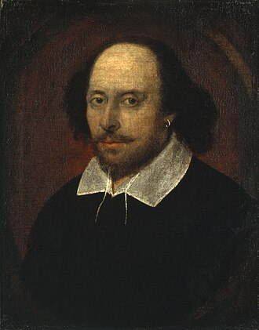
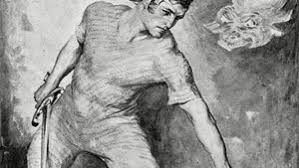

Hello Booklovers,You are at the right place.Here you can explore wide varities of collections. We include
books from different areas like autobiography,novel,fairy tales,stories,poems etc..Explore it.....!
 Rabindranath Tagore FRAS (/rəˈbɪndrənɑːt tæˈɡɔːr/ ⓘ; pronounced [roˈbindɾonatʰ ˈʈʰakuɾ];[1] 7 May 1861[2] – 7 August 1941[3]) was a Bengali poet, writer, playwright, composer, philosopher, social reformer, and painter during the age of Bengal Renaissance.[4][5][6] He reshaped Bengali literature and music as well as Indian art with Contextual Modernism in the late 19th and early 20th centuries. Author of the "profoundly sensitive, fresh and beautiful" poetry of Gitanjali,[7] he became in 1913 the first non-European and the first lyricist to win the Nobel Prize in Literature.[8] Tagore's poetic songs were viewed as spiritual and mercurial; where his elegant prose and magical poetry were widely popular in the Indian subcontinent.[9] He was a fellow of the Royal Asiatic Society. Referred to as "the Bard of Bengal",[10][5][6] Tagore was known by sobriquets: Gurudeb, Kobiguru, and Biswokobi.[a]
Rabindranath Tagore FRAS (/rəˈbɪndrənɑːt tæˈɡɔːr/ ⓘ; pronounced [roˈbindɾonatʰ ˈʈʰakuɾ];[1] 7 May 1861[2] – 7 August 1941[3]) was a Bengali poet, writer, playwright, composer, philosopher, social reformer, and painter during the age of Bengal Renaissance.[4][5][6] He reshaped Bengali literature and music as well as Indian art with Contextual Modernism in the late 19th and early 20th centuries. Author of the "profoundly sensitive, fresh and beautiful" poetry of Gitanjali,[7] he became in 1913 the first non-European and the first lyricist to win the Nobel Prize in Literature.[8] Tagore's poetic songs were viewed as spiritual and mercurial; where his elegant prose and magical poetry were widely popular in the Indian subcontinent.[9] He was a fellow of the Royal Asiatic Society. Referred to as "the Bard of Bengal",[10][5][6] Tagore was known by sobriquets: Gurudeb, Kobiguru, and Biswokobi.[a]

William Shakespeare (c. 23[a] April 1564 – 23 April 1616)[b] was an English playwright, poet, and actor. He is widely regarded as the greatest writer in the English language and the world's pre-eminent dramatist.[4][5][6] He is often called England's national poet and the "Bard of Avon" (or simply "the Bard"). His extant works, including collaborations, consist of some 39 plays, 154 sonnets, three long narrative poems, and a few other verses, some of uncertain authorship. His plays have been translated into every major living language and are performed more often than those of any other playwright.[7] Shakespeare remains arguably the most influential writer in the English language, and his works continue to be studied and reinterpreted.
Leo Tolstoy Born into an aristocratic family, Tolstoy's notable works include the novels War and Peace (1869) and Anna Karenina (1878),[5] often cited as pinnacles of realist fiction,[2] and two of the greatest books of all time.[3][4] He first achieved literary acclaim in his twenties with his semi-autobiographical trilogy, Childhood, Boyhood, and Youth (1852–1856), and Sevastopol Sketches (1855), based upon his experiences in the Crimean War. His fiction includes dozens of short stories such as "After the Ball" (1911), and several novellas such as The Death of Ivan Ilyich (1886), Family Happiness (1859) and Hadji Murad (1912). He also wrote plays and essays concerning philosophical, moral and religious themes.
-
Harry Potter

Harry Potter is a series of seven fantasy novels written by British author J. K.
Rowling. The novels chronicle the lives of a young wizard, Harry Potter, and his friends Hermione
Granger and Ron Weasley, all of whom are students at Hogwarts School of Witchcraft and Wizardry. The
main story arc concerns Harry's conflict with Lord Voldemort, a dark wizard who intends to become
immortal, overthrow the wizard governing body known as the Ministry of Magic, and subjugate all
wizards and Muggles (non-magical people).
-
Anglo Saxon Poetry

Anglo-saxon poetry was circulated orally in a preliterate society, and gathered
at last into books over some six centuries before the Norman Conquest ended English independence.
Against the odds some of these books survive today. This anthology of prose translations covers most
of the surviving poetry, revealing a tradition which is outstanding among early medieval literatures
for its sophisticated exploration of the human condition in a mutable, finite, but wonderfully
diverse and meaning-filled world.
-
A Guide to Old English

A Guide to Old English has established itself as the most thorough and most
stimulating introduction to the language of Anglo-Saxon England. This revised edition adds ten basic
texts, together with full notes and a comprehensive glossary, which convert the Guide into a
self-contained course book for students beginning a study of Old English. The texts, such as
Cynewulf and Cyneheard, the story of Caedmon and the conversion of Edwin, are those that have
traditionally been chosen by teachers precisely becasue they offer the best introduction to the
literature and culture of the time. They are arranged in order of increasing difficulty. The notes
and glossary constantly refer to the grammatical explanations in the Guide, so that course is fully
integrated and easy to follow.
-
Word-Hoard

Designed for introductory courses in Old English, Word-Hoard offers a vocabulary of some
2000 words drawn from the poems that beginning students normally read. Exploiting the natural
curiosity we feel about our own language, Stephen Barney draws etymological connections, provides
mnemonic aids, and introduces the student to cultural and literary concepts as well as words. This
second edition of his valuable book has been completely reset in a format that improves its clarity
and conciseness.
-
Beowulf

A Translation and Commentary:In a note discovered among his papers, J.R.R. Tolkien claims
to have "[put] it first into Old English".[3] However, Christopher Tolkien observes that this
sequence of events is inconsistent with the textual evidence, since the earliest manuscript of the
Modern English text was revised into a form that corresponds in several places to the Old English
text, which was thus probably based on a version of the Modern English tale.[7] The Old English
version as published is furthermore incomplete, breaking off before either of the two companions
faces Grendel. The Modern English text exists in three (partial) manuscripts and two typescripts;
Christopher Tolkien published the text of the later typescript along with the Old English
translation and a discussion of the tale's revision history in 2014.